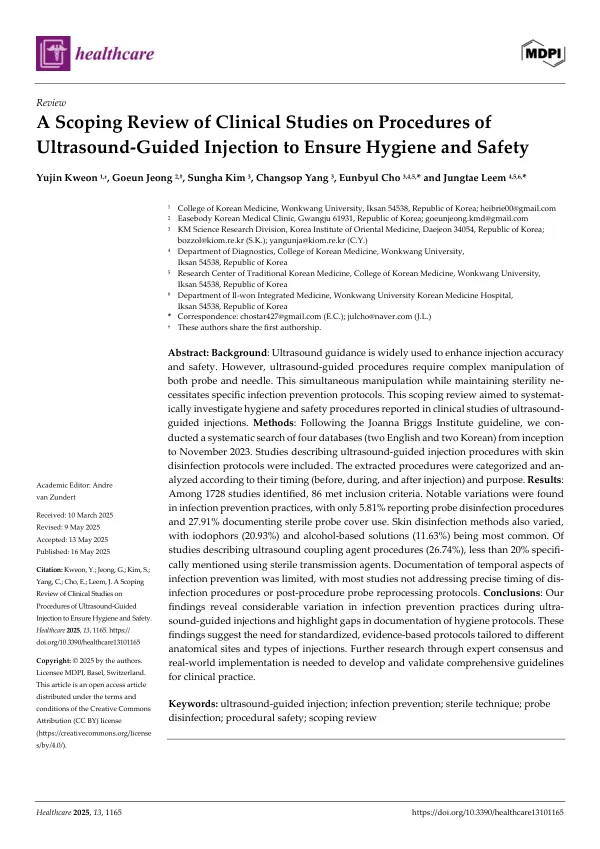

A Scoping Review of Clinical Studies on Procedures of Ultrasound-Guided Injection to Ensure Hygiene and Safety
Kweon Y, Jeong G, Kim S, Yang C, Cho E, Leem J
Healthcare 13(10):1165

첫 장 · 오픈액세스First page · open access
논문 소개Summary
초음파를 보면서 하는 주사는 정확도와 안전성을 높여 주어 임상에서 빠르게 늘고 있습니다. 다만 탐촉자와 바늘을 동시에 다루면서 무균 상태를 유지해야 하므로 감염 예방 절차가 따로 필요합니다. 이 고찰은 실제 임상연구들이 그 절차를 어떻게 기술하고 있는지를 살폈습니다.
조안나브리그스연구소의 지침을 따라 영어 데이터베이스 두 곳과 한국어 데이터베이스 두 곳을 처음부터 2023년 11월까지 검색했습니다. 초음파 유도 주사 절차와 피부 소독 방법을 기술한 연구를 포함하고, 뽑아낸 절차를 주사 전·중·후라는 시점과 목적에 따라 분류했습니다.
1,728편을 확인해 86편이 기준을 만족했습니다. 감염 예방 절차의 기술은 편차가 컸습니다. 탐촉자 소독 절차를 보고한 연구는 5.81%에 그쳤고 멸균 탐촉자 커버를 썼다고 적은 연구는 27.91%였습니다. 피부 소독제는 요오드계가 20.93%, 알코올계가 11.63%로 가장 흔했습니다. 초음파 전달 매질에 관한 절차를 언급한 연구는 26.74%였는데, 그 가운데 멸균 젤을 썼다고 분명히 밝힌 것은 20%가 되지 않았습니다.
시점에 관한 기술은 더 부족했습니다. 소독을 언제 하는지, 시술이 끝난 뒤 탐촉자를 어떻게 재처리하는지를 적은 연구는 드물었습니다. 여기서 조심할 것이 있습니다. 이 수치들은 그런 절차를 하지 않았다는 뜻이 아니라 논문에 적혀 있지 않다는 뜻입니다. 다만 적혀 있지 않으면 다른 연구자가 같은 조건을 재현할 수 없고, 감염 사고가 생겼을 때 무엇이 달랐는지 되짚을 수도 없습니다.
저자들은 해부학적 부위와 주사의 종류에 따라 달라지는 표준 절차가 필요하다고 보았습니다. 다음 단계로는 전문가 합의와 실제 현장 적용 연구를 통해 지침을 만들고 검증하는 일을 제안했습니다.
Ultrasound-guided injection improves accuracy and safety and has spread quickly in practice. Because it requires manipulating probe and needle at once while maintaining sterility, it also demands its own infection prevention procedures. This review examined how clinical studies actually describe those procedures.
Following Joanna Briggs Institute guidance, two English-language and two Korean databases were searched from inception to November 2023. Studies describing ultrasound-guided injection procedures together with skin disinfection protocols were included, and the extracted procedures were categorised by timing, before, during and after injection, and by purpose.
Of 1,728 records identified, 86 met the inclusion criteria. Reporting of infection prevention varied widely. Only 5.81% described probe disinfection and 27.91% documented the use of a sterile probe cover. Iodophors (20.93%) and alcohol-based solutions (11.63%) were the most common skin disinfectants. Procedures for the ultrasound coupling agent were mentioned in 26.74% of studies, and fewer than 20% of those specified a sterile transmission agent.
Temporal detail was scarcer still. Few studies stated when disinfection took place or how the probe was reprocessed afterwards. A caution belongs here: these figures mean the procedures were not documented, not that they were not performed. But without documentation another team cannot reproduce the conditions, and if an infection occurs there is no record of what differed.
The authors conclude that standardised, evidence-based protocols tailored to anatomical site and injection type are needed, and propose expert consensus and real-world implementation studies as the next step toward developing and validating such guidelines.
인용Cite
Kweon Y, Jeong G, Kim S, Yang C, Cho E, Leem J. A Scoping Review of Clinical Studies on Procedures of Ultrasound-Guided Injection to Ensure Hygiene and Safety. Healthcare. 2025;13(10):1165. doi:10.3390/healthcare13101165